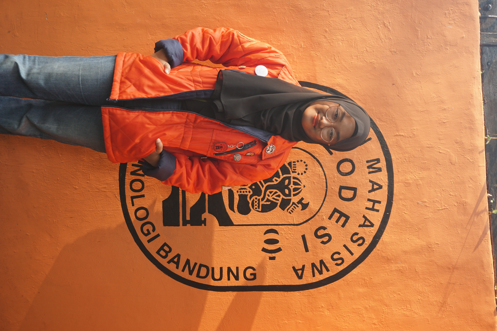
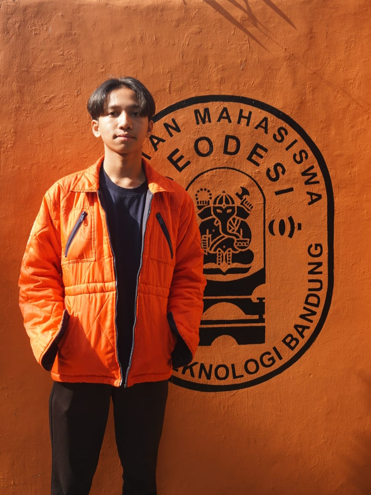
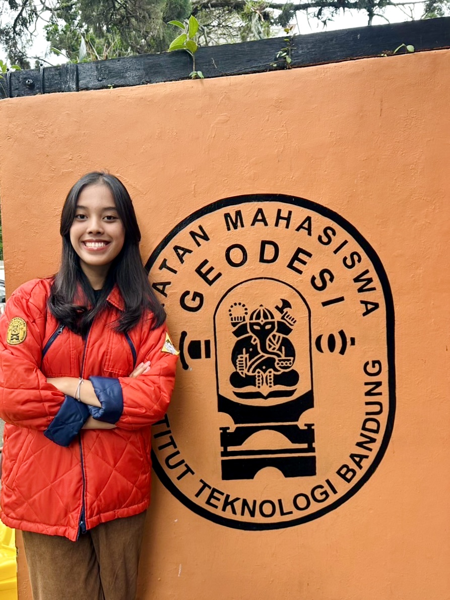
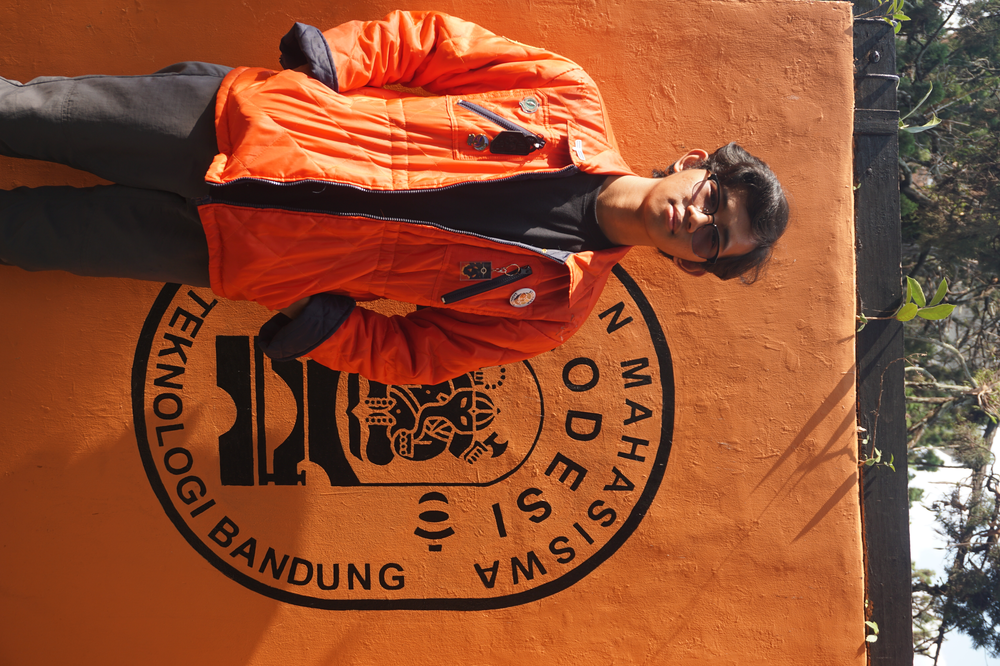

Mengenai WebGIS
Sistem informasi geografis berbasis web untuk mendukung mitigasi dan pemetaan risiko kebakaran hutan serta lahan gambut di Provinsi Kalimantan Barat.
Pemodelan Spasial Bahaya & Dampak Karhutla
WebGIS ini dikembangkan untuk memetakan tingkat kerawanan kebakaran hutan dan lahan di seluruh wilayah Provinsi Kalimantan Barat melalui integrasi 11 parameter spasial biofisik bahan bakar, aktivitas antropogenik, serta kondisi iklim, hidrologi, dan topografi.
Platform ini menyajikan peta tingkat bahaya (Safety Level) dalam 4 kelas, sebaran titik panas (hotspot) NASA FIRMS, serta analisis keterpaparan penduduk dan lahan gambut untuk mendukung prioritas mitigasi kebencanaan.
Alur Kerja Pemodelan
Tahapan pengolahan data geospasial secara sistematis mulai dari standardisasi hingga analisis dampak.
Standardisasi
Penyatuan data, pemotongan batas Provinsi Kalimantan Barat (Clip), penyeragaman proyeksi EPSG:32649, dan penyelarasan resolusi piksel 100 m (Resampling).
Ekstraksi & Reklasifikasi
Perhitungan indeks spektral (NDMI, NDVI, NBR, LST) di Google Earth Engine, analisis jarak (Euclidean Distance), serta reklasifikasi tiap parameter ke skala skor 1–4.
Pembobotan AHP
Penentuan bobot objektif untuk 3 kriteria utama dan 11 sub-kriteria melalui Analytic Hierarchy Process (AHP) yang teruji konsistensinya (CR ≤ 0,10).
Weighted Overlay & Validasi
Penggabungan seluruh raster skor menggunakan Simple Additive Weighting (SAW) menjadi Peta Bahaya Karhutla, lalu divalidasi dengan titik panas VIIRS/MODIS 2023–2025.
Analisis Dampak
Tumpang susun (overlay) peta bahaya dengan data kepadatan penduduk 2025, tutupan lahan, dan sebaran gambut per kabupaten/kota.
Klasifikasi Indeks & Parameter Model
Integrasi 11 parameter lingkungan dan antropogenik ke dalam 4 kelas Safety Level serta grafik tren tahunan titik panas (hotspot) periode 2015–2025.
Parameter Model
11 ParameterTren Titik Panas Tahunan
2015 – 2025Grafik menunjukkan dinamika jumlah kemunculan titik panas (hotspot) tahunan di Provinsi Kalimantan Barat berdasarkan sensor satelit NASA FIRMS (MODIS & VIIRS) dan data SiPongi KLHK pada periode 2015–2025.
Tim Pengembang
WebGIS ini dirancang oleh mahasiswa Teknik Geodesi dan Geomatika Institut Teknologi Bandung (Kelompok 02 K04 – GD4103 Sistem Informasi Geografis).




